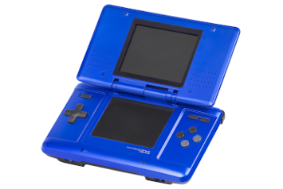
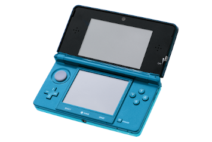
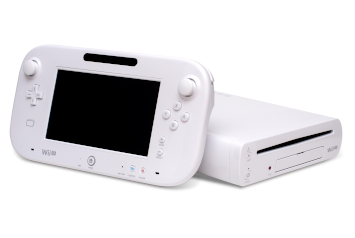
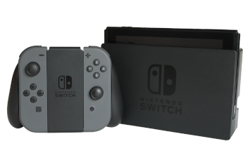

Konsole
Nintendo GameCube (2001)

Konsola gier wideo szóstej generacji, wyprodukowana i wydana w 2001 przez japońskie przedsiębiorstwo Nintendo. Konsola, zgodnie z nazwą, ma kształt kostki, do której podłączane są kontrolery. Jest następczynią Nintendo 64.
Nintendo DS (2004)
Przenośna konsola gier wideo zaprojektowana i wyprodukowana przez przedsiębiorstwo Nintendo. Wydana w 2004 roku w Kanadzie, Stanach Zjednoczonych i Japonii. Konsola ma obudowę typu clamshell, podobną do Game Boya Advance SP, a wewnątrz dwa ekrany LCD, z których jeden jest dotykowy. Była to pierwsza konsola Nintendo wydana najpierw w Ameryce Północnej, a nie w Japonii.
Wii (2006)

Konsola gier wideo zaprojektowana i produkowana przez japońską firmę Nintendo. Początkowo znana pod nazwą Revolution jest następczynią Nintendo GameCube.
Nintendo 3DS (2011)
Przenośna konsola gier wideo firmy Nintendo, która została oficjalnie zaprezentowana na targach E3 15 czerwca 2010 jako następca serii Nintendo DS. Ekran konsoli umożliwia oglądanie 3D bez konieczności noszenia specjalnych okularów, wykorzystując do tego metodę autostereoskopii. 11 października 2014 roku została wydana ulepszona wersja konsoli New Nintendo 3DS. Produkcję konsoli zakończono we wrześniu 2020 roku.
Wii U (2012)
Konsola gier wideo wyprodukowana przez japońską firmę Nintendo. Konsola została oficjalnie zapowiedziana 25 kwietnia 2011. Pojawiła się w sprzedaży 18 listopada 2012 roku w Ameryce Północnej. Premiera w Europie odbyła się 30 listopada, w Japonii 8 grudnia 2012. Prototyp Wii U został zaprezentowany 7 czerwca 2011 na targach E3. Konsola przestała być produkowana na całym świecie 31 stycznia 2017 roku.
Nintendo Switch (2017)
Konsola gier wideo opracowana przez Nintendo i wydana na całym świecie w większości regionów 3 marca 2017 roku. Sama konsola jest tabletem, który może być zadokowany do użytku jako konsola domowa lub używany jako urządzenie przenośne, co czyni go konsolą hybrydową. Bezprzewodowe kontrolery Joy-Con, wyposażone w standardowe przyciski i kierunkowe drążki analogowe do wprowadzania danych przez użytkownika, wykrywania ruchu i dotykowego sprzężenia zwrotnego, można przymocować po obu stronach konsoli, aby umożliwić grę w stylu handheld. Można je również podłączyć do uchwytu, aby uzyskać formę tradycyjnego gamepada do konsoli domowej, lub używać pojedynczo w dłoni, jak Wii Remote i Nunchuk, obsługując lokalne tryby gry wieloosobowej.